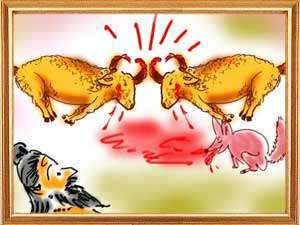
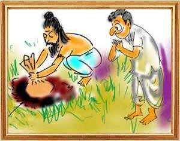
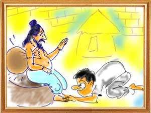

In a monastery far away from human habitation lived a saint called Deva Sarma. He amassed a lot of wealth by selling clothes gifted to him by well-wishers and disciples. It became a burden for him to guard that wealth. Since he did not trust anyone, he put all his money into a bag and carried it with him wherever he went. Ashadhabhooti, an experienced cheat, noticed Deva Sarma carrying his bag always with him and assuming that it certainly contained something valuable, began planning to snatch it from him.
One day, the cheat met the saint and promptly fell on his feet and said, “Oh, know-all, I have realized that this life is an illusion; youth is fleeting and all familial ties are like a dream. Please show me the correct path that delivers me from all worldly ties.” Pleased with his humility, Deva Sarma said, “Child, you are the blessed one who has thought of renouncing worldly pleasures. Listen, however low his caste is, the person that chants “Om Namahsivayah' and smears holy ash on his forehead, becomes Siva himself and knows no rebirth. I shall accept you as my portage but you must not enter the hermitage in the night because company is forbidden for saints. After initiation, you have to live in the hut at the entrance of the monastery.”
Ashadhabhooti promised the saint that he would consider every sign from him as a command and carry it out. Satisfied, the saint accepted the cheat as his disciple. Ashadhabhooti too began making Deva Sarma happy by attending to every need of his. But seeing that the saint never separated the money-bag from his person, Ashadhabhooti thought, “the old man is very crafty and keeps the bag always with him. How can I snatch it from him? Shall I kill him?”
As the cheat was at a loss to achieve his goal, the son of a disciple came calling on the sage. The visitor invited Deva Sarma to come to his village and perform the sacred thread ceremony of his son. The saint accepted the invitation and set out for the village taking Ashadhabhooti with him. On the way, the guru and his disciple had to cross a river. After bathing in the river and wanting to rest for a while, Deva Sarma took the money bag and pushed it into a quilt he was carrying and told the disciple, “I have to respond to nature’s call. I am leaving this holy quilt of Siva here. Keep an eye on it.” The moment the guru went out of his sight, Ashadhabhooti collected the bag and fled the place.
With great trust in his disciple, Deva Sarma decided to spend time by joining a crowd watching two well-fed goats fighting ferociously. As blood was running down their heads, a jackal came there to feast on the blood the two goats were shedding. Deva Sarma saw the jackal entering the scene and thought that the jackal would surely die caught between the two warring goats. His surmise came true and the jackal died, gored by the two goats.
Brooding over the demise of the jackal, Deva Sarma returned to where he had left the money-bag with Ashadhabhooti and panicked when he found Ashadhabhooti missing. The holy quilt was there but not the money-bag in it. He began wailing, “Oh, trickster, what have you done? I have lost everything in this world.” After a vain search for the trickster, the foolish saint returned home dejected.